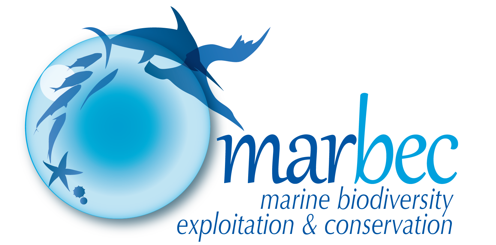
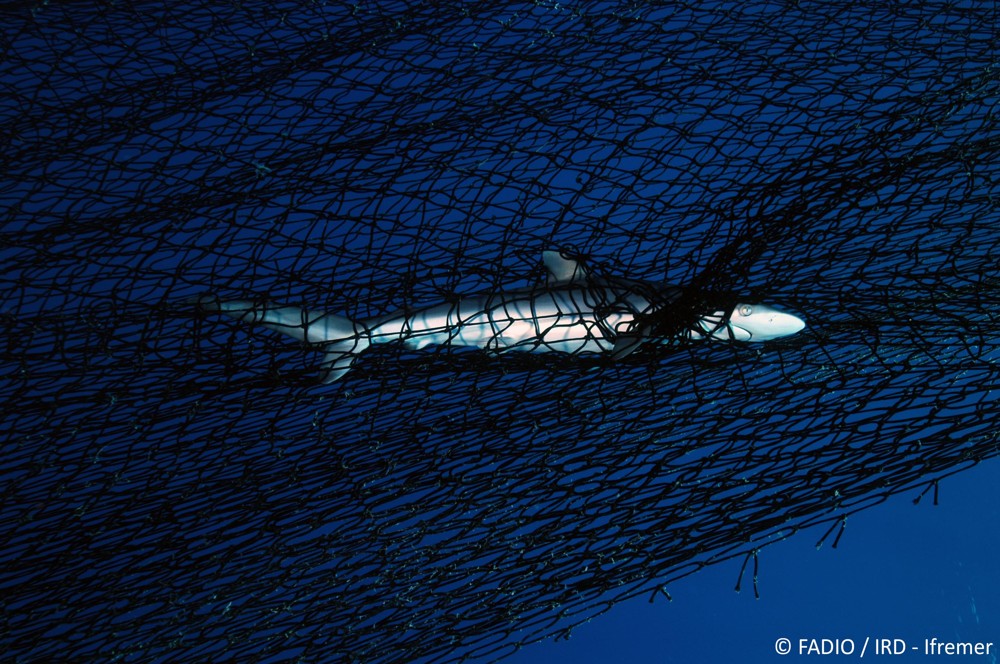
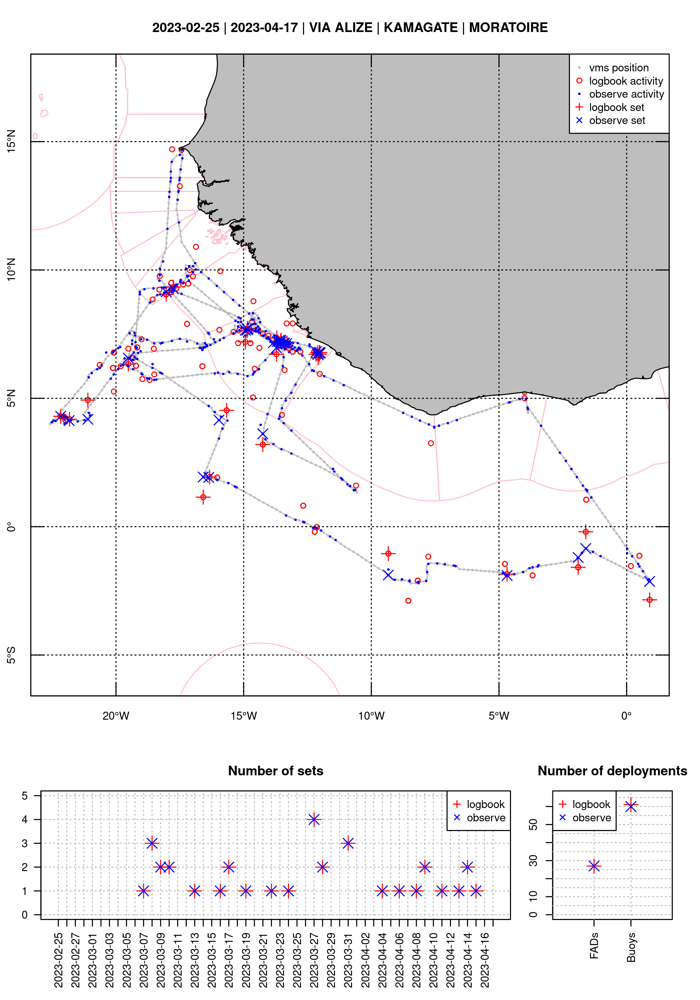

Tropical Tuna Fisheries
From data to management measures, a challenge for sustainable exploitation
Océane Bouhineau (oceane.bouhineau@ird.fr)
Mathieu Depetris (mathieu.depetris@ird.fr)
Théotime Fily (theotime.fily@ird.fr)
Clara Lerebourg (clara.lerebourg@ird.fr)
Esther Mollier (esther.mollier@ird.fr)
© FADIO / IRD - Ifremer

Introduction
What is the Exploited Tropical Pelagic Ecosystems Observatory? (Ob7)
What is it ?
What is it ?
What is it ?
The Observatory:
- is a set of resources (human and material) under the umbrella of the French National Research Institute for Sustainable Development (IRD).
- under the responsability of Julien Lebranchu (julien.lebranchu@ird.fr).
What is it ?
of exploited ressources

What is it ?
focused on a tropical
What is it ?
and pelagic area
Why do we need this kind of structure?
Each country exploiting fisheries resources must declare its activities (transversal variables like capacity, effort and capture)
To whom and why?
- European Commission, if EU member, used for example regarding fisheries agreements
- RFMOs (Regional Fisheries Management Organisations) to manage population dynamics

What are we focusing on?
Target species and bycatch
- Major tunas
- Yellowfin tuna (YFT, Thunnus albacares)
- Bigeye tuna (BET, Thunnus obesus)

- Skipjack tuna (SKJ, Katsuwonus pelamis)
- Albacore tuna (ALB, Thunnus alalunga)
- Yellowfin tuna (YFT, Thunnus albacares)

What are we focusing on?
Target species and bycatch
- Neritic tunas
- Bullet tuna (BLT, Auxis rochei)
- Frigate tuna (FRI, Auxis thazard)
- Kawakawa (KAW, Euthynnus affinis)
- Atlantic bonito (BON, Sarda sarda)
- Bullet tuna (BLT, Auxis rochei)
What are we focusing on?
Target species and bycatch
- Billfish and pelagic sharks species
- Swordfish (SWO, Xiphias gladius)
- Sailfish (SAI, Istiophorus albicans)
- Blue marlin (BUM, Makaira nigricans)
- Blue shark (BSH, Prionace glauca)
- Oceanic whitetip shark (OCS, Carcharhinus longimanus)
- Swordfish (SWO, Xiphias gladius)
What are we focusing on?
Fishing gears
- Bait boats
What are we focusing on?
Fishing gear
- Longlines
What are we focusing on?
Fishing gear
- Purse seiners
What are we focusing on?
Purse seine school type
- Free school
What are we focusing on?
Purse seine school type
- FOBs: Floating OBjects
natural
artificial

The information system
Around 4 axes
The information system
Collection: recovery of declarative data (logbook for example), sampling, fleet characteristics, etc.
The information system
Storage: management in databases and administration of these databases
The information system
Treatment: processes of checking/correcting data to ensure quality data with the least possible bias or specific exploitation
The information system
Sharing: expertise and coordination at several levels, for research projects, in support of stock assessments, data delivery, etc.
Data collection
On board and on shore sampling
Data collection
Why do we need to collect these data?
- Compliance : Regulations from the RFMOs
- Scientific purpose : Stock assessment (catches and biological parameters)
- Provide quality data :
- Data independence: limiting conflict of interest between fishing business and regulation
- Minimize biases: crew estimations reported in logbook
Data collection
What do we need to collect ?
- Estimation catch characteristics of the purse seine fisheries (catch and effort by species, size distribution of the catch)
- Region: Atlantic and Indian ocean
- Sample area: ICCAT and IOTC fishing ground
- Only main ports are covered (Abidjan, Dakar and Victoria)
- Primary sample unit: landing
Data collection - On shore
Declarative data
- Logbooks data :
- fishing activities
- capture quantities
- target species
- buoys
- Landing note informations :
- capture quantities
- target species
Data collection - On shore
Sampling at port
- Technicians during landings at ports
- Individuals measurement and counting
Data collection - On board
Sampling at sea
- On board observers
- Priority : collection of information on discards and bycatch species
Data collection - On board
Example of bycatch

Data collection - On board
Sampling at sea
- On board observers
- Correct the logbook data
Data storage
Information System
Data storage
Administration
- Administration of a database management system
- Design and programming operations for the collection, storage, processing and restitution
- Ensure data quality, identify and correct errors
- Ensure data security and integrity
- Ensure that data confidentiality is respected
Data storage
Quality and security
- Data quality : constraints like integrity, data type, and pre/post-integration check
- Check the data before and after integration in the database
- Limit the length of the sample sizes to realistic values
- Check the consistency of the fishing season
- Data security : protecting against catastrophic failures and intentional wrongdoing
- Security measures : fault-tolerant disks, off-site backups, authentication, access rights, VPN, IP-based access control, and encryption of data exchanges.
Data treatment
What do we do after that ?
Data treatment
Databases corrections
Errors may occur, when:
The Excel logbook file is written by the partners
Copying this file into the database

Data treatment
Databases corrections
Errors may occur, when:
The Excel logbook file is written by the partners, declarative issues
Copying this file into the database, entry issues
Tools then performs checks to highlight errors so that they can be checked and corrected if necessary.
Data treatment
Databases corrections
Errors may occur, when:
The Excel logbook file is written by the partners, declarative issues
Copying this file into the database, entry issues
Tools then performs checks to highlight errors so that they can be checked and corrected if necessary.
Data treatment
Databases corrections
Errors may occur, when:
The Excel logbook file is written by the partners, declarative issues
Copying this file into the database, entry issues
Tools then performs checks to highlight errors so that they can be checked and corrected if necessary.
Data treatment
Tropical Tuna Treament (T3)
Data treatment
Tropical Tuna Treament (T3)
- Ajust catches to landing weight.
- Define homogenous strata and standardize measurement.
- Assess the species composition and size distribution.
- Allocate the sample species composition to the set level.
Data treatment
Indicators examples
Estimated total catch
Estimated catch and effort
Fishing capacity
Data sharing
Coordination, expertise, and working groups
Data deliveries
Data calls
- For diverse projects (research, internships …)
- For the DGAMPA (Direction Générale des Affaires Maritimes, de la Pêche et de l’Aquaculture)
- For France (National Work Plan …)
- For the European Union (Fisheries Dependent Information, …)
- For RFMOs
- Delivery of transversal variables
- Specific formats
Expertise
RFMO working groups
- The International Commission for the Conservation of Atlantic Tunas
- The Indian Ocean Tuna Commission
- To simplify, 3 levels of actions:
- The Working Groups
- The Scientific Committee
- The Commission
RFMOs areas of interest?
For large pelagics, 4 RFMOs
The International Commission for the Conservation of Atlantic Tunas
The Indian Ocean Tuna Commission
Inter- American Tropical Tuna Commission
The Western and Central Pacific Fisheries Commission
Coordination
At European Union scale
- Regional Coordination Groups
- Main hub for regional coordination and cooperation
- Composed of experts appointed by Member States (e.g. MS’ national correspondents and EU Commission).
- Continuous process
- Ob7 is involve in the RCG Large Pelagics
(https://www.fisheries-rcg.eu/rcg-lp/)
- Aim: to move from a “national” to a “regional” level.
One specific characteristic
Focus on the EU
- Each entity negotiates on its side and is responsible for providing data
- The EU :
- coordinates all these tasks (for RFMOs)
- guarantees the monitoring of the fishing quota(s) by European fishermen
- gives more impact on the international scene

Research support
Projects
- Project FISHN’CO: Strengthening EU-MAP data collection by developing Regional Work Plans for the Regional Coordination Groups (RCG) NA NS & EA, Baltic and Large Pelagics and Economics Issues.
https://www.fisheries-rcg.eu/fishnco/ - Project SECWEB: Developing mechanisms to support the planning and execution of administrative tasks and the branding and online visibility of the Regional Coordination Groups (RCGs), with the aim to establish a long-term supportive structure (SECWEB).
https://www.fisheries-rcg.eu/secweb/
Other topics
Development of a regional database for large pelagics
Regional Database & Estimation System (RDBES, https://sboxrdbes.ices.dk/)
Regional database for the Mediterranean and Black Seas (Med&BS RDBFIS, https://medbsrdb.eu/)
To summarise
- The Exploited Tropical Pelagic Ecosystems Observatory is a set of resources, humans and materials, under the umbrella of the French IRD
- Its aims are to collecting, storing, processing and sharing data focusing on the French tuna fisheries in the Atlantic and Indian Oceans
- Furthermore, he provides support and expertise among the RFMOs (Regional Fisheries Management Organisations) and partners (Spanish Institute of Oceanography, Seychelles Fishing Authority, …)
Thank you for your attention,
do you have any questions?
© FADIO / IRD - Ifremer